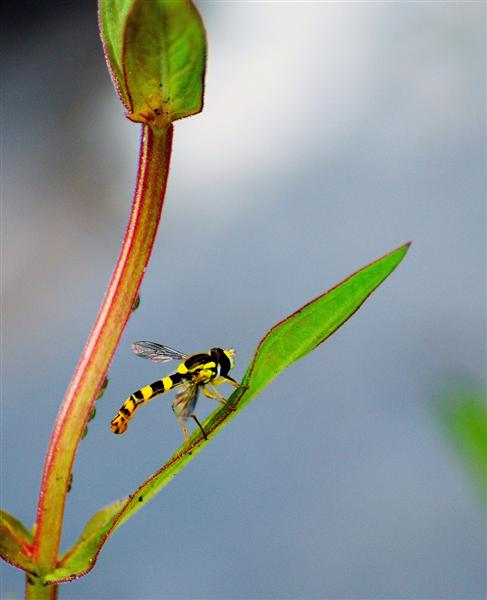
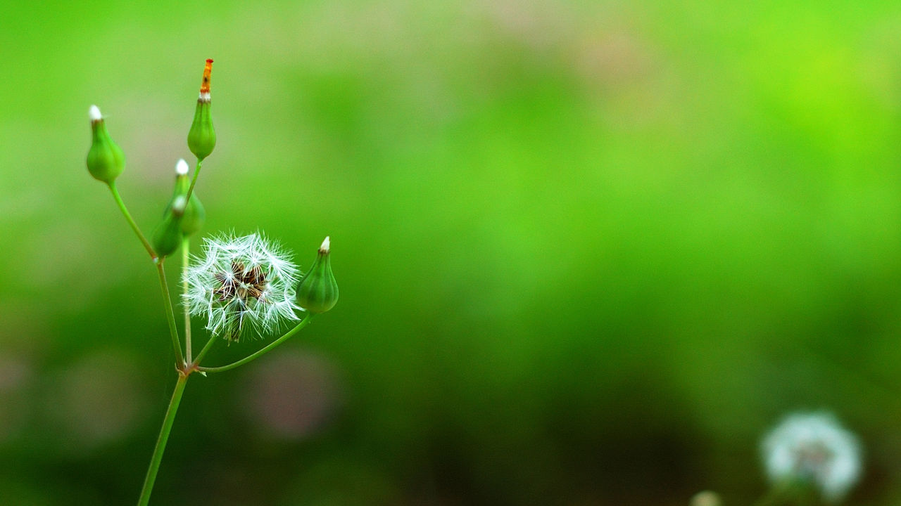

一、table-cell的应用
1、图片垂直居中
使用display: table-cell和vertical-align: center来实现大小不固定的图片的垂直居中效果


2、等高布局
习近平同志19日上午在参加党的十九大贵州省代表团讨论时强调，党的十九大报告进一步指明了党和国家事业的前进方向，是我们党团结带领全国各族人民在新时代坚持和发展中国特色社会主义的政治宣言和行动纲领。要深刻学习领会中国特色社会主义进入新时代的新论断，深刻学习领会我国社会主要矛盾发生变化的新特点，深刻学习领会分两步走全面建设社会主义现代化国家的新目标，深刻学习领会党的建设的新要求，激励全党全国各族人民万众一心，开拓进取，把新时代中国特色社会主义推向前进。
习近平同志19日上午在参加党的十九大贵州省代表团讨论时强调，党的十九大报告进一步指明了党和国家事业的前进方向，是我们党团结带领全国各族人民在新时代坚持和发展中国特色社会主义的政治宣言和行动纲领。要深刻学习领会中国特色社会主义进入新时代的新论断，深刻学习领会我国社会主要矛盾发生变化的新特点，深刻学习领会分两步走全面建设社会主义现代化国家的新目标，深刻学习领会党的建设的新要求，激励全党全国各族人民万众一心，开拓进取，把新时代中国特色社会主义推向前进。
习近平同志19日上午在参加党的十九大贵州省代表团讨论时强调，党的十九大报告进一步指明了党和国家事业的前进方向，是我们党团结带领全国各族人民在新时代坚持和发展中国特色社会主义的政治宣言和行动纲领。要深刻学习领会中国特色社会主义进入新时代的新论断，深刻学习领会我国社会主要矛盾发生变化的新特点，深刻学习领会分两步走全面建设社会主义现代化国家的新目标，深刻学习领会党的建设的新要求，激励全党全国各族人民万众一心，开拓进取，把新时代中国特色社会主义推向前进。
3、自动平均划分元素
10001
20002
30003
40004
50005
60006
70007
80008
90009
1000010